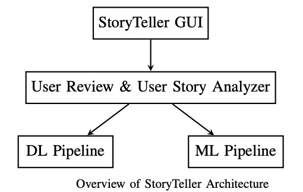

LEDCity Architecture with ARIES
In the Figure are reported the main ARIES architecture, its components, and their relations. The components are designed to be integrated in Docker Container and work as independent units. The components are logically linked to activities and tasks of the project, to facilitate their comprehension and development. Detailed view of each ARIES component will be reported in the next upcoming months, with links to the developed (components) prototypes. The list of components and TRLs (i.e., tools with associated Technology readiness levels) delivered during the project are as follow: StoryTeller - TRL component enabling the analysis of user reviews and user stories for supporting software evolution In following sections, we detail (incrementally during the project) the main implemented/evolved components and TRLs in ARIES, with links to the actual components & TRLs repositories and semantic connections with ARIES activities.
1) ZHAW existing Components that Reached higher Technology readiness levels (TRLs) in ARIES
In this section we describe the ZHAW existing components that reached higher Technology readiness levels (TRLs), with their implementation.
StoryTeller - TRL component enabling the analysis of user reviews and user stories for supporting software evolution in BOND.
StoryTeller StoryTeller classify user stories and user reviews content by performing the following steps: (1) processing and splitting the text of user reviews and user stories in sentences; (2) producing a vectorial representation of sentences in user reviews and user stories; (3) automated classification of user reviews and user stories based on machine learning (ML) or Deep learning (DL) strategies. StoryTeller acts as a wrapper and combines both a ML and DL component inside a single executable instance. The set of labeled data sets used to apply to both the ML and DL Pipelines and to evaluate their resulting precision and accuracy values are provide in this repository.
StoryTeller Repository : https://github.com/spanichella/ARIES-story-teller How to install StoryTeller: see combined-pipelines/README.md Link to ARIES WPs : It is a facility that will be used in the context of WP4 (Automated Inherent and direct user feedback behavioral analysis). StoryTeller Demonstration Video: